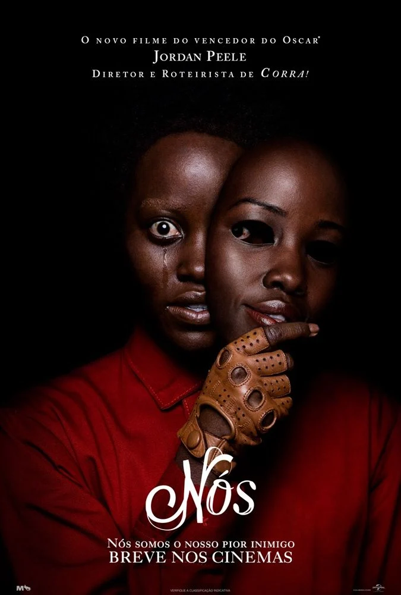

Adelaide (Lupita Nyong'o) e Gabe (Winston Duke) decidem levar a família para passar um fim de semana na praia e descansar em uma casa de veraneio. Eles viajam com os filhos e começam a aproveitar o ensolarado local, mas a chegada de um grupo misterioso muda tudo e a família se torna refém de seus próprios duplos.
Saiba mais